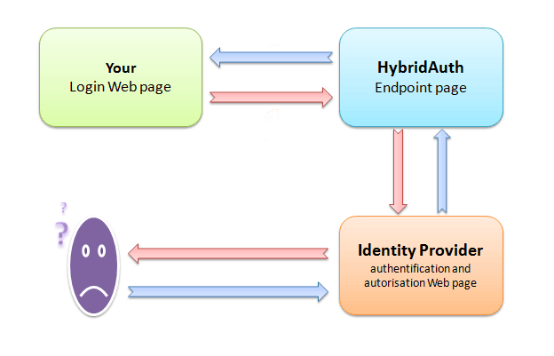

how to explain that, .. Um, okey,
As someone said :"When a user logs into an IDp service and grants your application permission to access their data, the IDp redirects the user to your application's endpoint URL with some extra GET/POST parameters attached...". An endpoint page is used as a proxy bettwen the IDp and your blog or Web site.
Except for OpenID, each Social Network or Identity Providers will require that you create an external application linking your Web site to their Authentification and Autorisation system. These external applications ensures that users are logging into the proper Web site and allows IDps to send the user back to the correct Web site after successfully authenticating their Accounts.
To simplify the complexity of implementing IDps Authentication and Authorization protocols for developers, HybridAuth come with a simple approach that separates thoses external applications from your site by using a specific page as a proxy (or what we call an "endpoint URL"). This endpoint page will provide two urls to be used during the user Authentication (start and done) :
HybridAuth endpoint URL Start login used only by Hybrid_IdProvider::login(), and you generally won't ever need to touch it,
HybridAuth endpoint URL Login done can be only requested by the IDp Authentification
or Autorisation system,
HybridAuth endpoint URLs can't be directly accessed, they are supposed to be completely transparent to the end user.
 hybridauth/Hybrid/endpoint.php is the endpoint URL to your application. is used as a proxy bettwen the IDp and your web site.when a user select and IDp form (let say YOUR_LOGIN_PAGE.PHP):
1. the object intanciedted by Hybrid_Auth::setup( idprovider, params ) in YOUR_LOGIN_PAGE.PHP will build an url then redirect the user to HYBRID.ENDPOINT.PHP (or $HYBRID_AUTH_HYBRID_URL_EP)2. HYBRID.ENDPOINT.PHP will check somes parameters and resetup Hybrid_Auth from the stored session,
3. and redirect again the user to the IDp identification page, where user can grants or not access to their data
4 if the user don't grants access to your site, some IDp will callback HYBRID.ENDPOINT.PHP in what they call
"cancel mode". HYBRID.ENDPOINT.PHP will recallback YOUR_LOGIN_PAGE.PHP where Hybrid_Auth::hasSession()
will return FALSE, and error/reason stored in Hybrid_Auth::getErrorCode(), Hybrid_Auth::getErrorMessage()5 if the user grants access to your site, IDp will callback HYBRID.ENDPOINT.PHP with some extra GET/POST parameters attached, HYBRID.ENDPOINT.PHP will recallback YOUR_LOGIN_PAGE.PHP where Hybrid_Auth::hasSession() will return TRUE, and profil/contacts stored in Hybrid_IdProvider::getUserProfile(), Hybrid_IdProvider::getUserContacts().
Home - Overview - User guide - Blog - Contact - Contribute - Licenses - Credits - Similar projects
{kind=link}